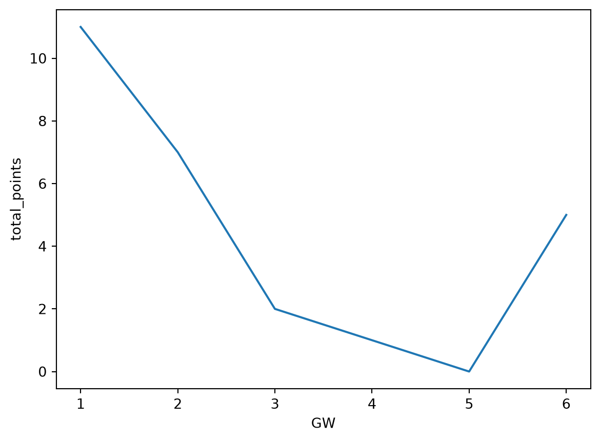
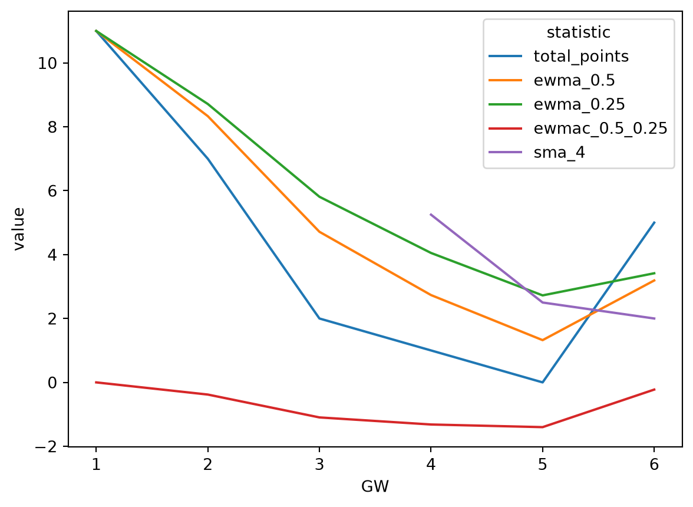
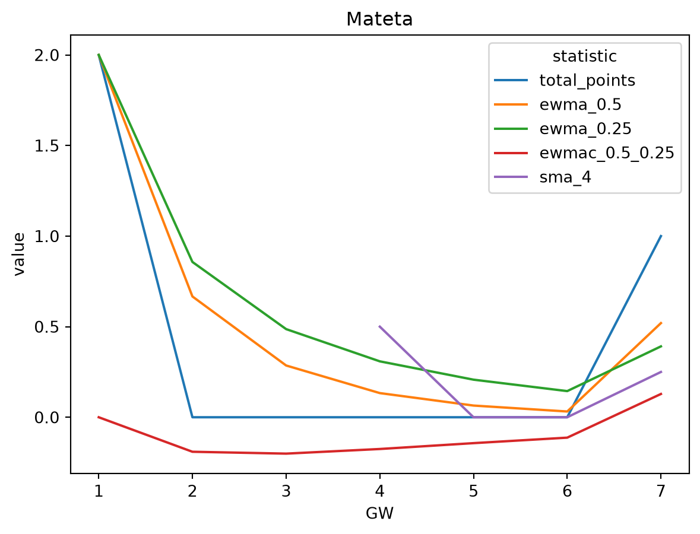
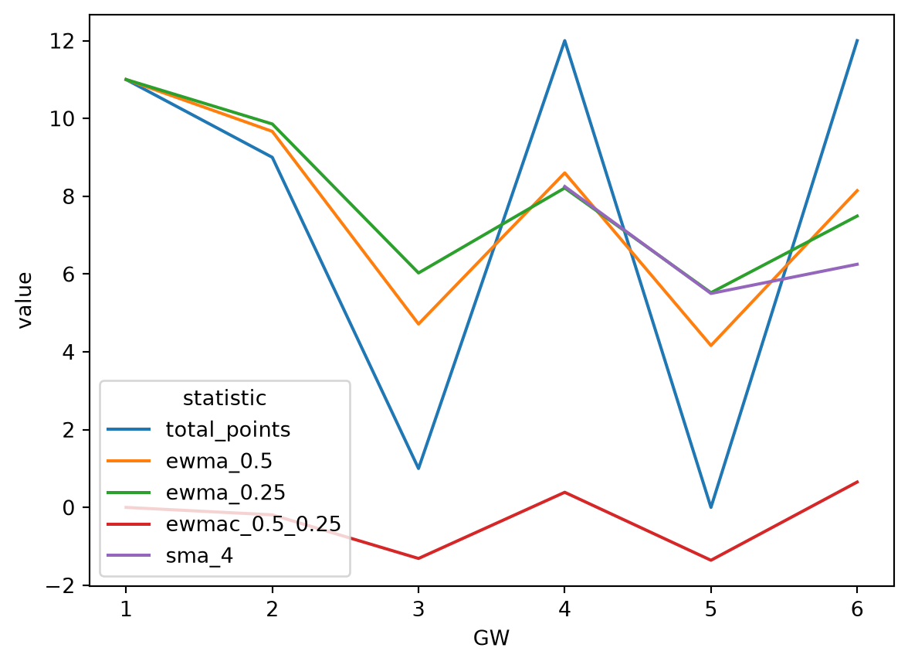
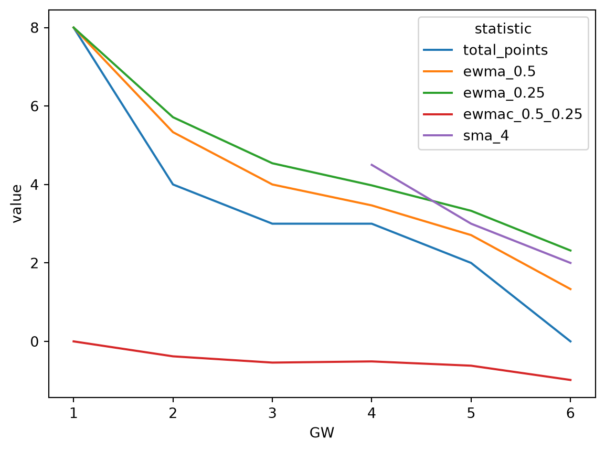
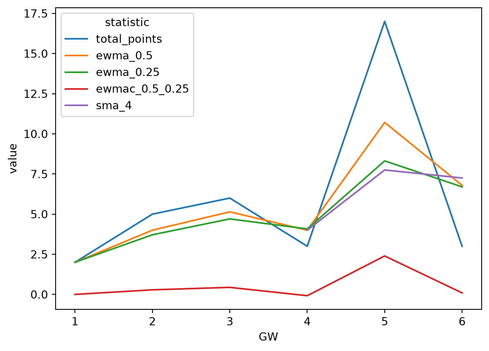
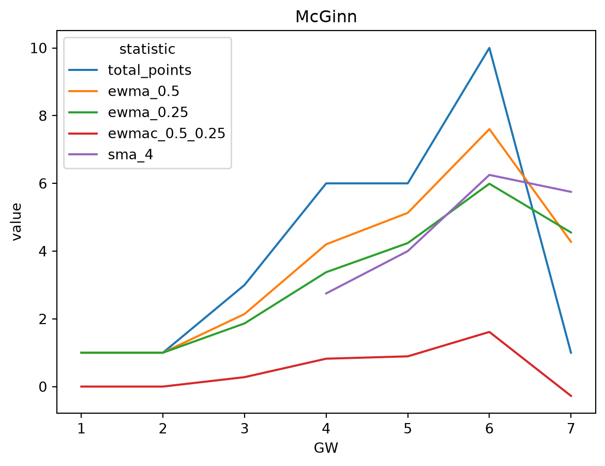
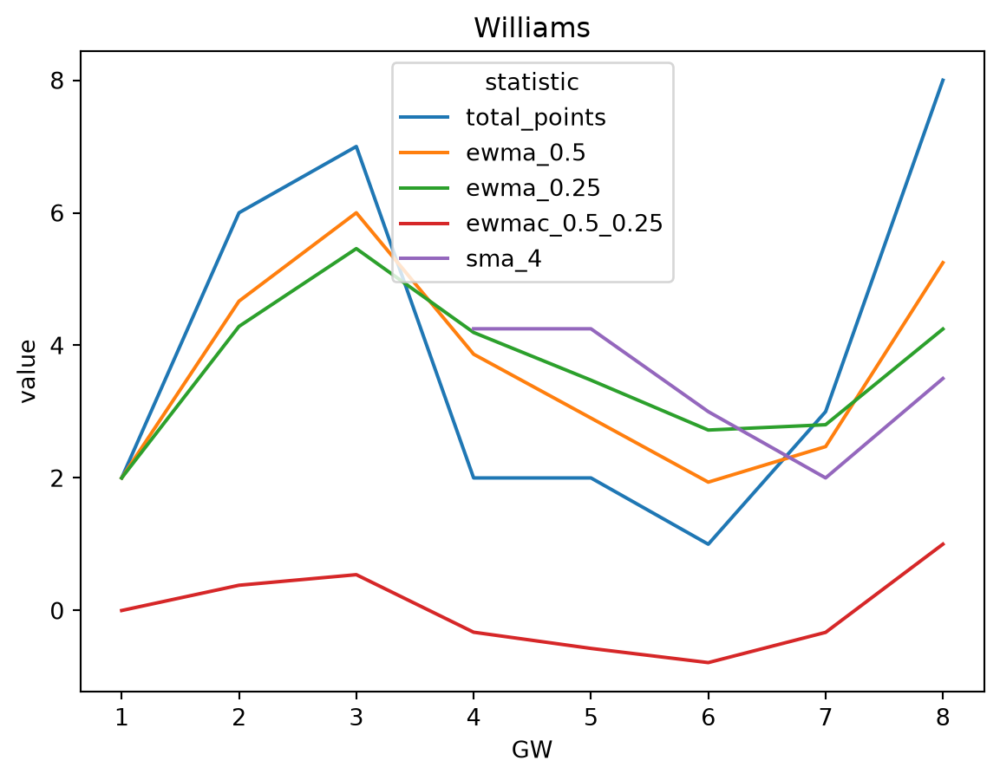
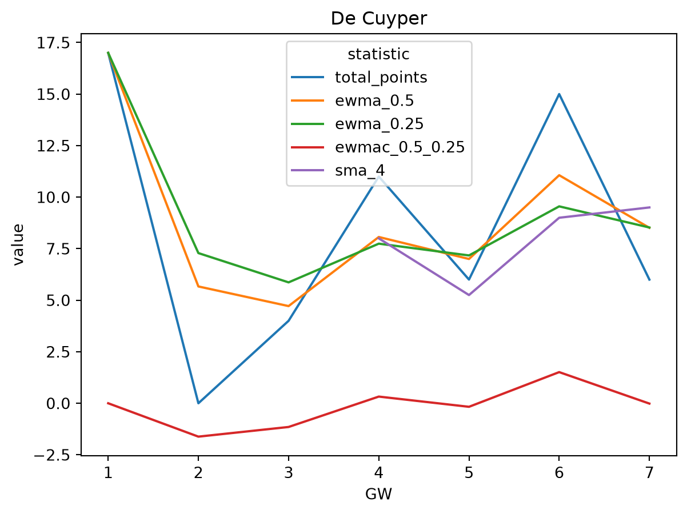

GW 7: The Game Begins
Sample data
Now the burn-in period is complete, and I can start making transfers based on players’ recent points performance. Let’s have a look at a sample timeseries of points data for a random player: Benjamin White.
Exponentially Weighted Moving Averages (EWMA)
I will be buying and selling players based on exponentially weighted moving averages (EWMA). An exponentially weighted moving average is different from a simple moving (or rolling) average in that it (exponentially) upweights more recent observations in the average calculation. The disadvantage of only using the most recent data point to inform my transfers is that I would often be making decisions based on noise. The disadvantage of using a simple moving average is that I am implicitly making older data as important as newer data in my calculation. The exponentially weighted moving average is a pragmatic halfway house that uses all the available data, but is less influenced by older data.
The Exponentially Weighted Moving Average Crossover (EWMAC)
The strategy I will be using is called an Exponentially Weighted Moving Average Crossover (EWMAC). Put simply, in addition to the criterion of having a high SMA, I will look to buy players whose short term EWMA is also higher than their long term EWMA. Conversely, I will look to sell any of my players whose short term EWMA is lower than their long term EWMA. The idea is that when a player’s short term EWMA is higher than their long term EWMA, their form is improving, and vice versa. Transgerring based on the crossover of a short and long term EWMA, rather than one EWMA means I should heopfully yuy (sell) players who not are in improving (deteriorating) form, but are in “accelerating” in that direction, rather than tapering off. This hopefully will cut out noise and save me from making transfers based on signals that soon stabilise.
Parameters
How do I do decide what short term and long term means in football? The alpha parameter in the EWMA formula defines the weight of the most recent observation i.e. 0.5 means that the most recent value will contribute to half od the EQMA value. The remaining points follow suit geometrically, so the second to last point contibutes half of the remaining weight, which makes a quarter, the third last point will contribute an eight to the average, etc. etc.
I will choose an alpha of a half for the short term EWMA, and an alpha of a quarter for the long term EWMA. If this proves too volatile, I’ll adjust this later. But this is something that I don’t want to adjust more than once or twice over the whole season.
Computing EWMAC(0.5, 0.25)
Let’s go back to Benjamin White and compute his EWMA-0.5 and EWMA-0.25 as well as the crossover. We’ll also include his simple 4 week moving average (SMA-4) of points.

Both EWMAs smooth out the underlying timeseries. The short EWMA (alpha=0.5) being below the long EWMA (alpha=0.25) indicates that White’s form is only deteriorating. Note that we don’t get values for SMA-4 until we have 4 data points.
Ranking players by SMA(4) and EWMAC(0.5, 0.25)
Let’s get the players with the highest simple moving 4 week average, and consider buying those with large EWMAC(0.5, 0.25).
PID second_name position_name sma_4 ewmac_0.5_0.25 now_cost
124 Groß Midfielder 9.50 -0.2 62
115 De Cuyper Defender 9.00 1.5 53
330 Bogle Defender 8.75 -1.7 47
504 Vušković Defender 8.50 0.5 51
411 Haaland Forward 7.50 -0.6 157
397 Semenyo Midfielder 7.25 0.1 83
286 Belloumi Midfielder 7.00 -0.1 52
229 Tarkowski Defender 7.00 -0.7 62
204 Mitchell Defender 6.75 -0.1 45
391 Gvardiol Defender 6.75 -0.9 58
94 Schade Midfielder 6.75 -1.2 62
109 Verbruggen Goalkeeper 6.50 1.1 46
350 Becker Goalkeeper 6.50 -0.6 55
45 McGinn Midfielder 6.25 1.6 54
428 Santos Carneiro da Cunha Midfielder 6.25 1.3 79
384 Donnarumma Goalkeeper 6.25 1.0 55
165 Junqueira de Jesus Forward 6.25 0.7 79
40 Rogers Midfielder 6.25 0.4 80
112 van Hecke Defender 6.25 -0.2 49
649 Maitland-Niles Defender 6.25 -0.4 45Removing anyone with a negative EWMAC(0.5, 0.25)…
PID second_name position_name sma_4 ewmac_0.5_0.25 now_cost
115 De Cuyper Defender 9.00 1.5 53
504 Vušković Defender 8.50 0.5 51
397 Semenyo Midfielder 7.25 0.1 83
109 Verbruggen Goalkeeper 6.50 1.1 46
45 McGinn Midfielder 6.25 1.6 54
428 Santos Carneiro da Cunha Midfielder 6.25 1.3 79
384 Donnarumma Goalkeeper 6.25 1.0 55
165 Junqueira de Jesus Forward 6.25 0.7 79
40 Rogers Midfielder 6.25 0.4 80
214 Kamada Midfielder 6.00 0.7 50
113 Kadıoğlu Defender 5.50 1.6 44
176 Dasilva Defender 5.50 1.1 40
399 Cherki Midfielder 5.50 0.7 80
93 Schuster Defender 5.50 0.2 45
41 Buendía Stati Midfielder 5.25 0.6 59
101 Henderson Midfielder 5.00 3.7 49
236 Dewsbury-Hall Midfielder 5.00 1.8 66
332 Justin Defender 5.00 0.4 45
427 Mbeumo Midfielder 5.00 0.3 78
552 Brobbey Forward 5.00 0.0 57Now we’ll look at our team
PID second_name position_name sma_4 ewmac_0.5_0.25 now_cost
229 Tarkowski Defender 7.00 -0.7 62
204 Mitchell Defender 6.75 -0.1 45
109 Verbruggen Goalkeeper 6.50 1.1 46
388 Guéhi Defender 6.00 -0.1 60
13 Rice Midfielder 4.75 0.4 73
481 Anderson Midfielder 4.00 0.6 63
250 Leno Goalkeeper 3.75 -0.3 45
346 Calvert-Lewin Forward 3.75 -0.6 61
261 Iwobi Midfielder 3.50 0.4 54
96 Damsgaard Midfielder 3.00 -0.7 53
469 Williams Defender 3.00 -0.8 50
368 Szoboszlai Midfielder 2.00 -1.0 68
136 Welbeck Forward 1.25 0.1 58
223 Mateta Forward 0.00 -0.1 63Transfers
Forward tap-in
I have 5 transfers to play with, but I don’t have to use them all. First thing that stands out is that I have two forwards with a very low SMA4, and Mateta has a negative EWMAC. So first step is to find at least one new forward. Joao Pedro seems to be the best contender - the forward with the highest SMA4 and a positive EWMAC. I want to take a closer look at both of them before I set anything in stone.
Mateta

Very happy to say goodbye to Mateta based on this.
Joao Pedro

A little choppy, but since I don’t intend to hold players for anything less than a few weeks, this should be fine.
Happy to sell for 6.3 and buy at 7.8 - that’s why I made my initial squad cheap.
A tougher call
For my next transfer, do I transfer my second-from-bottom player, a forward with a positive EWMAC, or my third-from-bottom-player, a midfielder with a negative EWMAC. Given that there aren’t any more forwards too high up on the list to transfer in, and given that Szoboszlai has a EWMAC is nearly -1, my next transfer will be him. I’ll choose Semenyo to replace him - second to Groß in terms of SMA4, but a better EWMAC. Again, let’s take a look at both of them more closely first.
Szoboszlai

An easy goodbye.
Semenyo

This is a little harder for me to interpret. The trend is good but it’s definitely warped by a really good week. I’ll check the next best midfielder to be safe, but otherwise I’m not too concerned. Let’s try McGinn…
McGinn

Much better. I’ll take McGinn over Semenyo in the spirit of momentum.
Selling 6.9m and buying at 5.4m means I even make a profit after transfer fees. Result.
Defender no brainer
Dropping Williams for De Cuyper looks like a no-brainer
Williams

De Cuyper

Easy yes. Very Happy to buy at 5.1m and sell at 5.0m.
Summary
I don’t want to be too heavy handed this early on so we’ll stop at three transfers.
- Sell Mateta for 6.3m and buy Joao Pedro for 7.8m
- Sell Szoboszlai for 6.9m and buy McGinn for 5.4m
- Sell Williams for 5.0m and buy De Cuyper for 5.1m
After transfer fees, this leaves me with a net cashflow of negative 1.4m, which averages under my target of 0.5m per transfer. Fingers crossed for GW7…